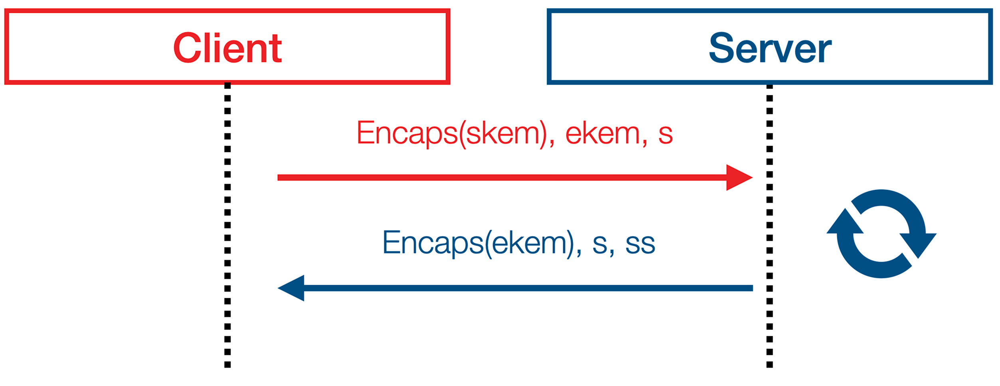
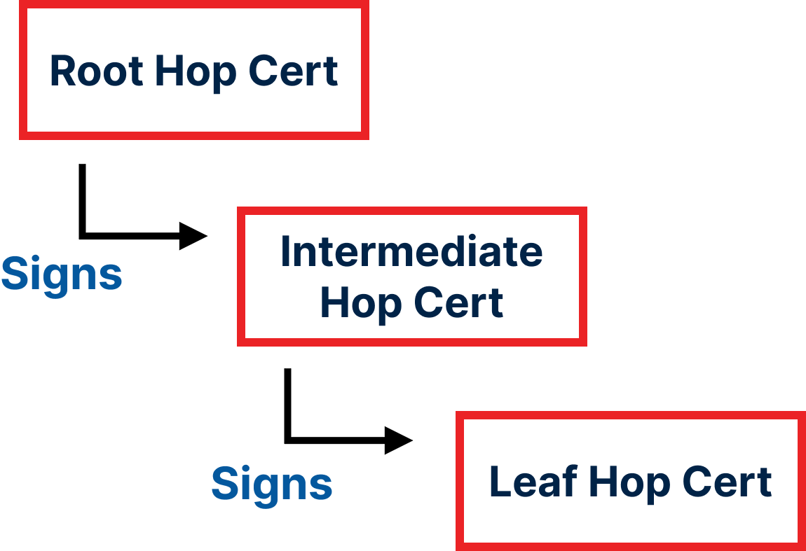
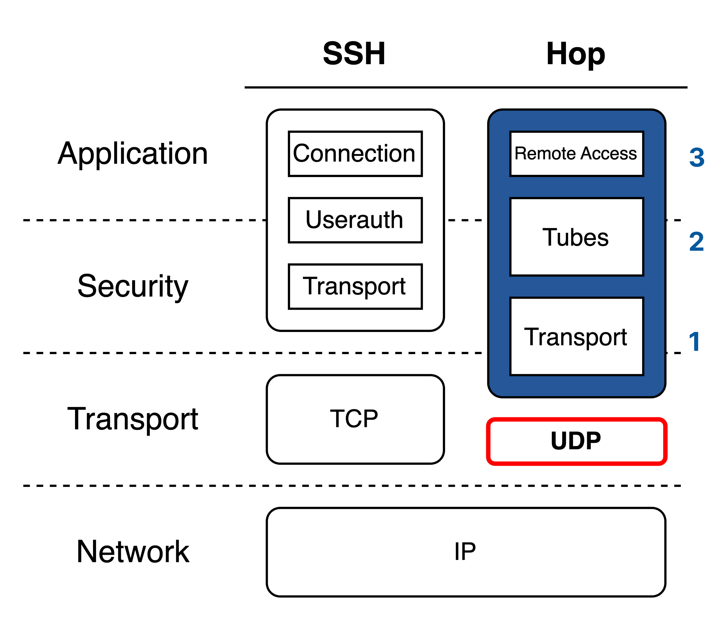
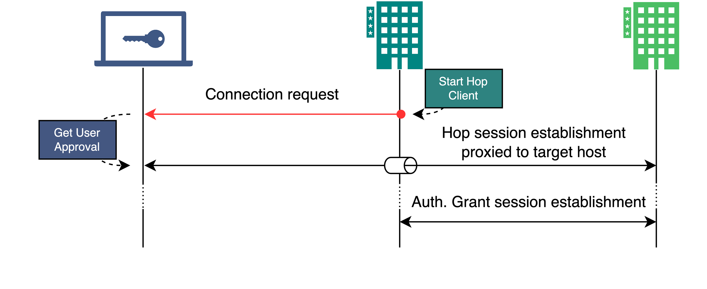
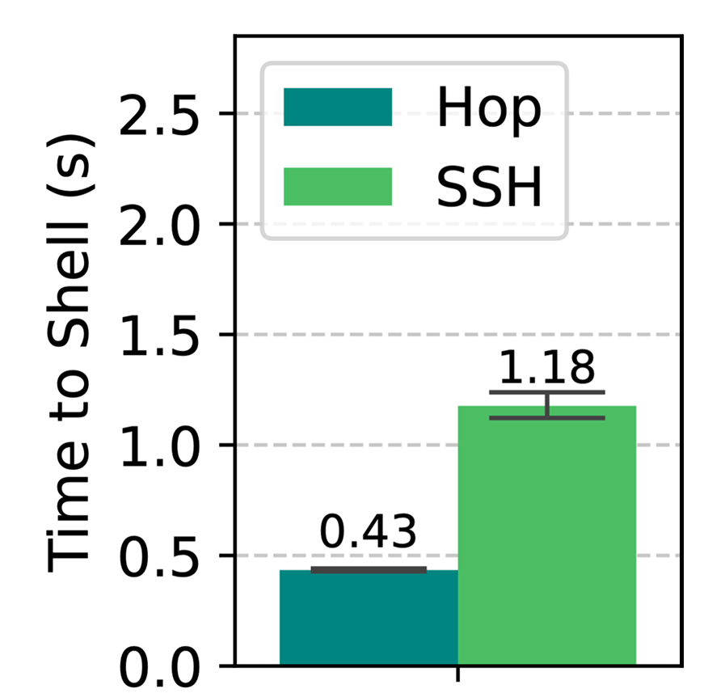

Why SSH Struggles in Today’s Environment
- In-band negotiation: State-machine complexity → crypto downgrade
- Probing: Key-oracle → identity exposure to active scanners
- Unbounded agent forwarding: ssh -A → lateral-movement vector
- TOFU: Unscalable manual key checks → MITM attacks
30 Years: 35 RFCs expanded attack surface & protocol complexity
→ What if we take a clean-slate approach instead of patching SSH?
Noise Handshake & Hidden Mode
- Fixed Cipher Suites: Prevent downgrade attacks (e.g., Terrapin)
- Hidden Mode: Unauthenticated probes get no response

Automated Host Identity
- Hop Certificates: native, chain of trust, avoid parsing complexity
- Native ACME Protocol: Automated certificate issuance
- Replace Trust-On-First-Use
| Field | Size (bytes) |
|---|---|
| Header | 4 |
| Validity Period | 16 |
| Public Key | 32 |
| Parent Fingerprint | 32 |
| Identities | 6–514 |
| Parent Signature | 64 |

Hop Inner Sub-Protocols over UDP

Secure Delegation: AuthGrant
- Replaces agent forwarding (ssh -A)
- Bastions operate as dumb UDP pipes without keys

Would you like to
Who,allow bob.cloud.com
what,to run the command 'sudo reboot'
to whom,as alice
on private.server.com
and when?from Wed Apr 9 16:03:28 EDT 2025
until Wed Apr 9 16:04:28 EDT 2025?
Yes
> No
Hop in Practice
- Reference implementation in Go (~18k LoC)
- Feature parity with SSH:
- Interactive remote login shell
- Remote command execution
- Local and remote port forwarding
- Faster Session Establishment

Link and Contact
Paul Flammarion – paul@uci.edu